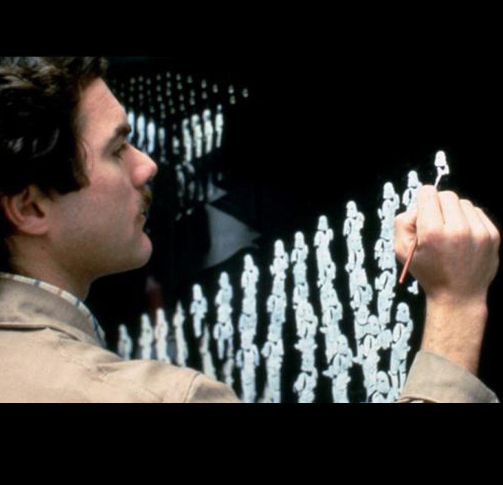
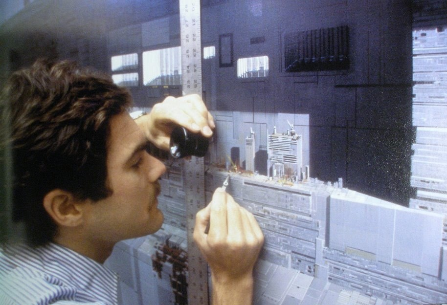
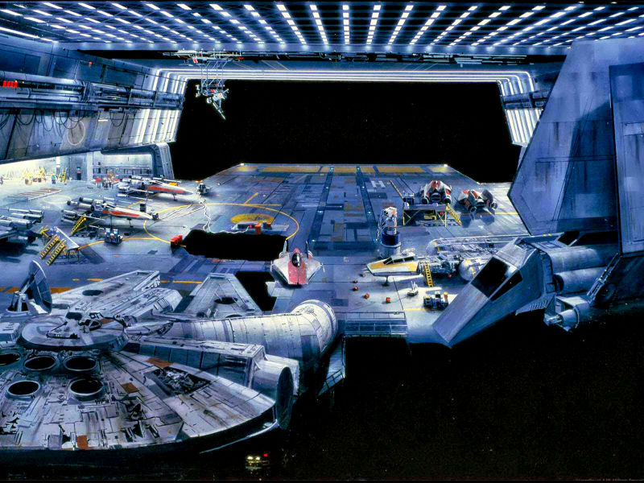
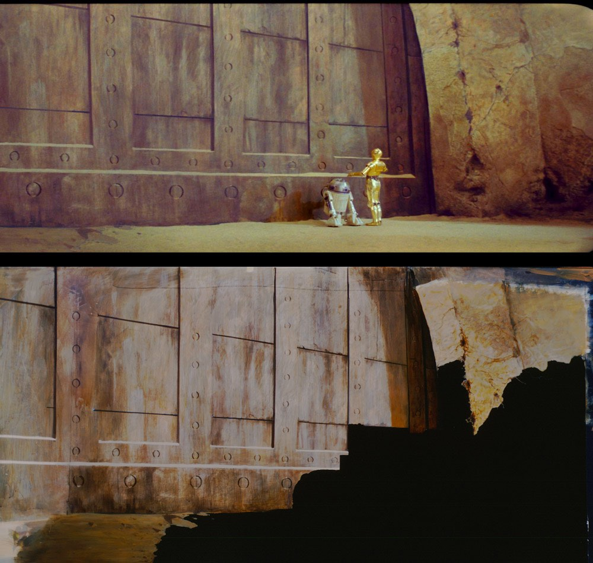
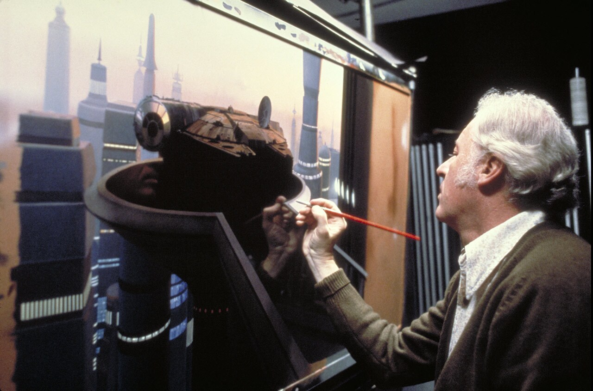

The Gallery
This page is here to showing off how George and his team made the VFX and Sound FX for the original trilogy
Scrolling down will find a video at the bottom of the page made by StudioBinder (all creadit to him) about all the differnt effects used in the first Star Wars movie's and all the effects they continued to use in the following 2 movies in the original trilogy




